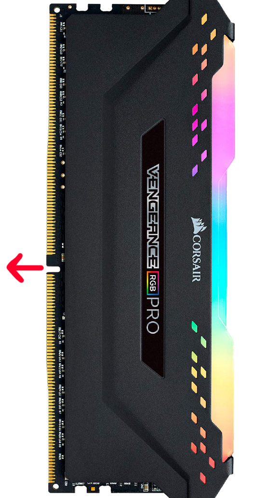
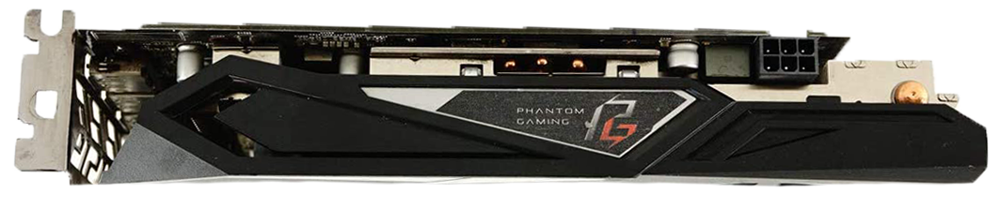

Before we start building, we'll want to prepare our work area with:
A clutter free table
An anti static surface
Tools: screwdriver, box cutter, thermal compound, cable ties
Optional Items: container for screws, side cutters, anti-static strap
Setting up an Anti Static Work Station
In order to avoid ruining your computer components with static electricity while working on it, you'll want to:
Avoid rubbing your socks against carpeted floors.
Plug in your power supply before working, leave it off, and before you touch a piece of your computer you touch the power supply to ground yourself. You can also purchase an anti-static strap and connect it to the power supply in order to avoid having to remember to reground yourself.
STEP 1 - CPU
Grab the motherboard and put the IO shield to the side.
Use the motherboard box as a work station and take the CPU out of it's box.
Push down the lever on the CPU holder, pull out, and push up to move the retention plate out of the way.
Line up the triangle or alternate marking that is on the corner of the CPU with the marking on the corner of the CPU slot.
Place the CPU on top of the pins in the proper orientation and let it drop into place, giving it a wiggle to make sure it's secure.
Lower the lever on the side and put it back into place. Remove the plastic shield covering the CPU and place it back in the box.
STEP 2 - RAM

Next we have the RAM. Get both sticks out of their packing.
Find the RAM slots on the top right of the motherboard. You'll want to leave an empty slot between each stick of RAM.
Push back one of the levers on the end of the RAM slots and line up the notch on the bottom of the stick with the notch in the slot.
Apply even pressure on both sides of the stick of RAM and push down until you hear a click on each end.
OPTIONAL: If you have an m.2 SSD now is the time to install that.
Find the m.2 slot on the motherboard. Some may be on the back or under heatspreaders or shrouds.
Slide the flat end into the slot and gently hold in place while you it screw in.
STEP 3 - CPU COOLING
Now for the CPU cooler. Installation for this item will vary depending on the model, but the basic instructions are the same.
Unscrew the brackets from the front and get the backplate for the cooler from the box.
Turn the motherboard over and place the backplate on. When handling the motherboard, try to only touch the edges or metal components, to avoid getting skin oils on the PCB (Printed Circuit Board).
Grab the thermal compound. You'll want to apply a very small amount to the CPU to provide a thin layer once squished down by the cooler. You can always wipe it off if there is too much and try again.
Screw in the cooler and connect the 4 pin to the cpu_fan1 slot above the CPU.
STEP 4 - CASE
Next we'll be putting the motherboard into the case. Put the motherboard to the side and take out the case. Remove the front and back panels.
Make a plan for airflow configuration. You'll want to have at least 3 fans. Some cases come with an extra fan or two, but you'll most likely want to buy some extra as these aren't always the best quality.
While taking the screws out of the case you'll want to keep them separated and labeled.
Install any fans and reroute any cables to get ready to install the motherboard. You'll want to route the wires according to where they plug in on the motherboard.
STEP 5 - MOTHERBOARD
Grab the IO shield. You'll want to check the inside of it to make sure the tabs on the top of each hole are bent up enough to allow the port through.
Check the orientation of the IO shield up against the motherboard and install into case by pushing on each corner of the shield to lock it into place.
Check your case instructions for installing any standoffs for the motherboard.
Double check the standoffs and IO shield by picking up the motherboard by the CPU cooler and placing it into the case at a slight angle.
Screw in the motherboard. Be careful not to over tighten the screws.
Now you can plug in all the cables you routed earlier such as the fans, RGBs, CPU cooler, USB connectors, and control panel pins.
STEP 6 - HDD AND SSD
Each harddrive and SSD mounting mechanism is different for each case, so be sure to check your instructions for this step.
For this case the harddrive gets mounted to the back, and the SSD gets mounted to the inside on the right of the motherboard.
Grab a seta cable from the motherboard box. It will be in the shape of an L. The leg of the L goes down when going into the drive.
Plug into the drive and then into the motherboard.
STEP 7 - POWER SUPPLY
Once again, installation of power supply units varies from case to case so check your specific case instructions for details.
For this case its just four screws on the side. Unplug the power supply unit from the wall and place into the case.
Determine if the fan of the power supply unit should be facing up or down, depending on the amount of space below your case and airflow pattern.
Screw in power supply unit. Grab the cables from the box and begin plugging them into the components. You'll want to wait to plug them into the power supply until after you've done some cable management
Starting with the 24-pin on the right of the motherboard, you'll want to brace the motherboard from behind as you push this cable in until you hear a click.
Next is the 8-pin EPS connector,labeled CPU, this will be split into 2 groups of 4 unlike the PCI express connector which is 6 and 2. This goes on the top left of the motherboard.
The PCI express cable is going to depend on your graphics card. You'll want to check the number of pins on the graphics card and match it up with a cable that works. We'll plug this into the power supply first and the graphics card later.
The harddrive cables come next, plug them into the drives and any RGB. Be delicate with plugging anything into the drives as they are delicate.
Time to do some cable management. Take your time routing the cables as you need to be able to close the side panels and it will help with airflow.
Now you'll want to connect all the cables to the power supply.
STEP 8 - GRAPHICS CARD

We are finally at the graphics card. Remove any slot covers your case has that would be in the way of your graphics card. There is no need to remove all of them, just the one or two that are needed.
Grab the graphics card and line it up to the slots on the case and the slot on the motherboard slot below the CPU, make sure the notch to the left of the slot is in the right spot on the GPU.
Push the tab on the right back and push the graphics card in with even pressure until there is a click.
Screw the graphics card into the case.
Grab the PCI express cable and plug it into the graphics card.
Now you can put any panels back (aside from the front) and plug in the power supply unit, a keyboard, mouse, and monitor!
BOOTING UP
Its time for the moment of truth. Time to boot up and install Windows with some help from JayzTwoCents who covers all the details of starting up a brand new computer and installing an operating system.